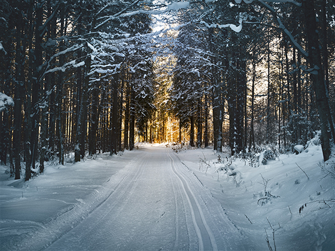
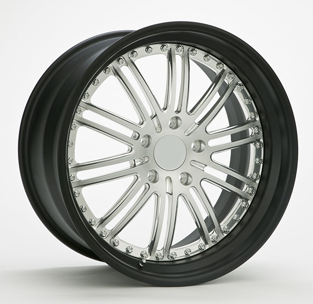
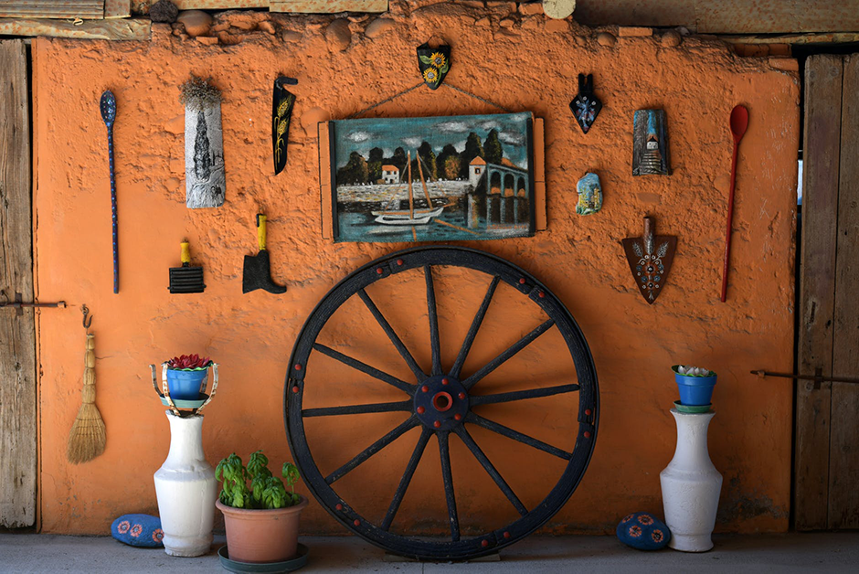
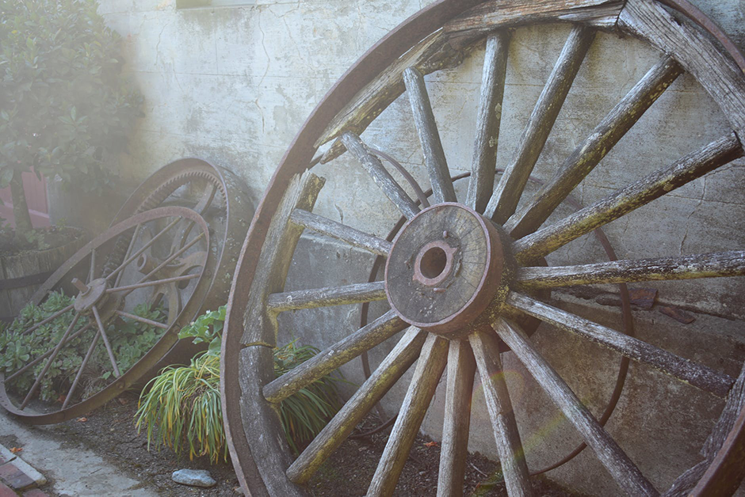
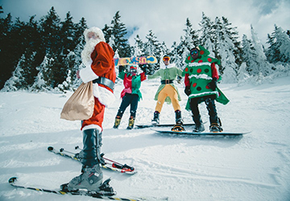
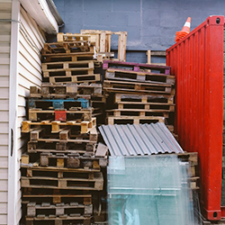
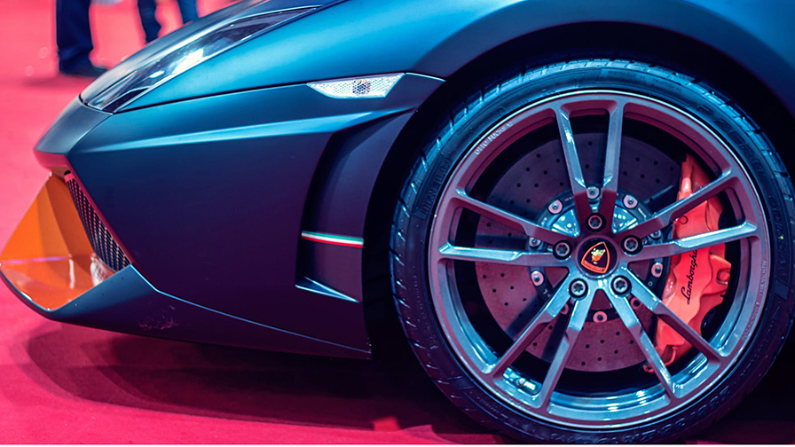

Idag är det en Juldag! Det är ju ändå den 1 December.
"Anledningen till att vi alla går på högvarv inför julen med den eviga, oåterhållsamma och ofta knasiga julklappsshoppingen är antagligen att vi inte riktigt vet hur vi ska uttrycka vår kärlek i ord." -Livet.se

Idag är det en Hjul dag!
"Fälg, strukturell del av ett hjul. Kring fälgens periferi monteras däcket samt i förekommande fall innerslangen. Fälgars diameter anges ofta felaktigt i tum. Det är egentligen ett index vilket för vissa storlekar ligger nära måttet i tum." - wikipedia.org
Idag är det en Juldag!
I Sverige konsumerar vi 9 000 ton julskina under enbart december månad.
Idag är det en Juldag!
"Det måste vara en mänsklig rättighet att tycka att det är fint att vara ensam också på en julafton." -Livet.se

Idag är det en Hjul dag!
"Ett hjul är en cirkel-, torus- eller cylinderformad konstruktion för att underlätta en linjär rörelse, eller omvandla en linjär rörelse till rotationsrörelse. Hjulet används bland annat för att stöda ett fordon i rörelse (vagnshjul), överföra krafter (kugghjul) och bevara energi (svänghjul). Hjulet brukar anses som en av mänsklighetens äldsta uppfinningar och räknas som en av de fem enkla maskinerna."
Idag är det en Juldag!
Visste du att medelsvensken öskar sig "absolut ingenting" i julklapp. Följt av "ingenting" kommer pengar och därefter upplevelser.
Och bara 1% av alla svenskar önskar sig fred på jorden.
Trots det köper svenskar 40 miljoner julklappar. -expressen.se

Idag är det en Hjul dag!
De första hjulen uppfanns under bronsåldern. Till en början bestod hjulen enbart av en rund bit trä med ett hål i mitten för axeln. Sedan under mitten av Bronsåldern ca 2200 - 1550 år före vår tid uppfanns hjulen med ekrar. - wikipedia.org
Idag är det en Juldag!
Smålänningar är de verkligen snåla? Enligt Handelns utredningsinstitut så planerade smålänningar att lägga i snitt 5 946kr per person under julen. Det är mest i Sverige. Västsvenskar däremot är snålast i sammanhanget.

Idag är det en Juldag!
Tyvärr blir det inga skidande tomtar på julafton. Kanske mer troligen tomte med gummistövlar och paraply. Detta är vad som brukar levereras på julafton. Ser det annorlunda ut i år?
De enda ställerna man kan förväntas träffa jultomten på skidor är i norra Sverige, Finland och Norge om vi håller oss i närheten.

Idag är det en Juldag!
Svenskar dricker även 40 miljoner liter julmust per år enligt Carlsberg. Hur många toalettbesök är inte det?
Idag är det en Juldag!
Vi svenskar dricker cirka 5 miljoner liter glögg vare jul. Jajamensan 5 miljoner liter. Troligen skjuter försäljningen av russin och mandlar även i höjden under jul.

Idag är det en Hjuldag!
Visste du att ju bredare hjul du har desto mer kontakt och fäste får man med vägbanan. Det är därför racerbilar har så breda däck som de har. Men detta är enbart för att gummiblandningen kräver det och inte för att fästet ska vara stort.
Idag är det en Hjuldag!
Har du som tradition att julbaka såhär på lucia?
Om du inte har bakat något redan så kanske det är dags att göra det snart. En viktig del av julen är ju trotsallt alla sötsaker man konsumerar. Det är ju exempelvis ingen jul utan knäck och marsipan.
Idag är det en Juldag!
Visste du att julgranen är ätbar. Iallafall så länge det inte är en i plast åtminstonde. Observera även det att kulorna och den större delen av dekorationen inte heller är bra för matsmältningen.
Idag är det en Hjuldag!
Har du tänkt på att hjulet troligtvis uppfanns av en lat person?
Idag är det en Hjuldag!
George W Bush familj kom ursprungligen ifrån Ohio. Samuel Bush finansierade Buckeye Foundry vilka tillverkade hjul åt järnvägen. Hans son Prescott Bush var ursprunget till familjens förmögenhet och väg in i politiken.
Idag är det en Juldag!
Det fanns under 1600 talet en absurd snömanns festival.
Snömänn kunde för länge sedan också vara fulla och sälja alkohol då de alltid hade sin charm kvar. Perfekt för de som vill främja sin försäljning av alkohol.
Idag är det en Hjuldag!
Kan man räkna in Roulette hjulen i kategorin hjul?
Alla nummer adderade i ett roulette hjul blir 666
Idag är det en Juldag!
Norrsken heter Aurora Borealis och Sydsken heter Aurora Australis.
Aurora är morgonrodnadens gudinna i den romerska mytologin. Det latinska namnet är alltså något missvisande eftersom polarskenet till skillnad från morgonrodnaden inte är reflekterat solljus.
Idag är det en Hjuldag!
Visste du att man inte vet när det första hjulet egentligen upfanns eller vad man använde det till. Man tror att det första hjulet användes till att snurra keramik ca 3 500 år f.v.t. Men det första hjuldrivna fordonet tros vara en leksaks bil gjord i sten vilken hittades i Kurdistan under år 2011.
Idag är det en Juldag!
Nu när det är kallt ute är det viktigt att tänka på våra små vänner fåglarna de är desperata för mat vid den här årstidem och de behöver din hjälp. Marken har frusit vilket gör att de inte kan komma åt deras normala föda. Så hjälp till genom att lägga ut fågelmat. På köpet får man att man kanske får se någon fin fågel.
Idag är det en Juldag!
Har det kommit någon snö ännu?
Om inte anser jag att det är dags att resa bort till snön nu. Det blir ju ingen Jul utan snö.
Idag är det en Hjuldag!
Skulle det inte gå en film med hjul i på biografen idag? Jo det är klart det gör. Hjul är så nödvändiga i dagens samhälle så att det måste finnas hjul i åtminstonde en av filmerna som visas idag. Tänk på hur världen hade sett ut utan hjul. Det är inget man direkt kan föreställa sig.
Idag är det en Juldag! Aftonen har kommit!
Idag är det Julafton så varför öppnar du denhär kalendern? Har du inget viktigare för dig? Jo just det, ta och häng lite med släkt och vänner nu.